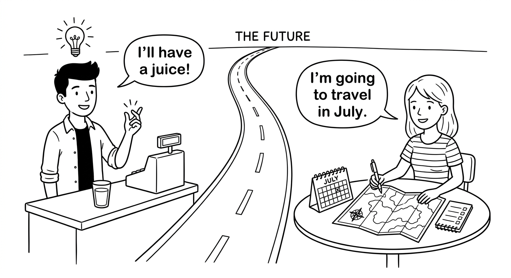
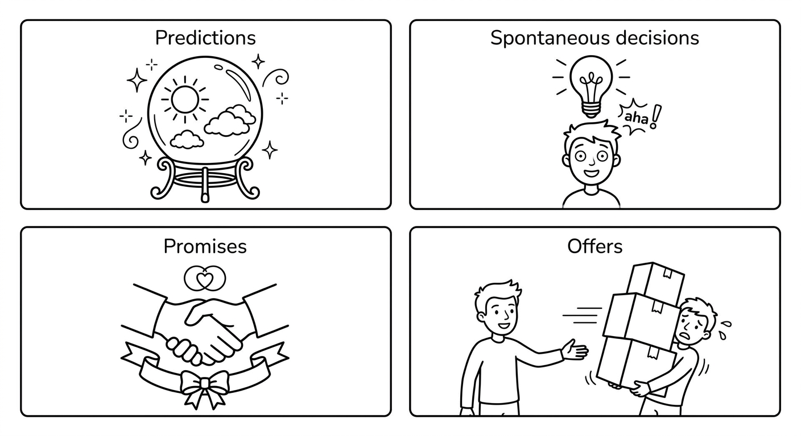
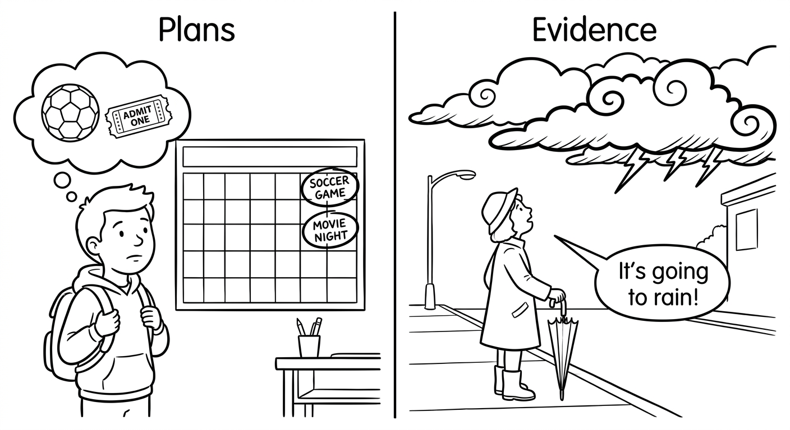
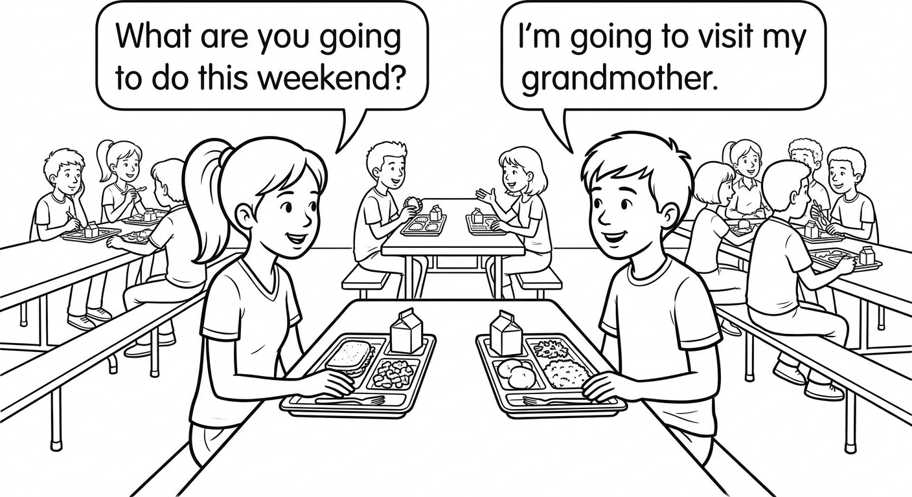
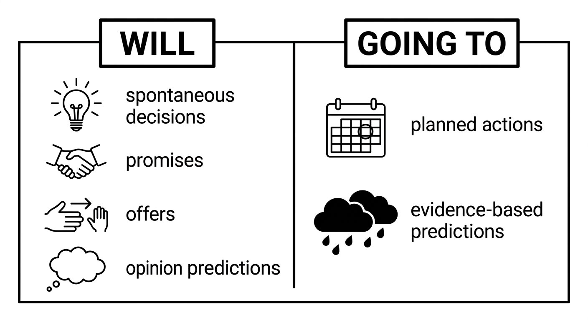

Simple Future
Learn how to talk about the future in English using two important structures: will and going to. You will learn when to use each one, how to make negative sentences and questions, and how to talk about your plans, predictions, and promises.

Will (Future Simple)
We form the future with will using:
Subject + will + base verb
Em português: Sujeito + will + verbo na forma base (sem conjugar)
Will is the same for all subjects (I, you, he, she, it, we, they). The verb after will is always in the base form — never add -s, -ed, or -ing.
| Form | Structure | Example |
|---|---|---|
| Affirmative | Subject + will + base verb | She will travel to São Paulo. |
| Negative | Subject + will + not + base verb | He will not (won't) forget the meeting. |
| Interrogative | Will + subject + base verb? | Will you help me? |
Short answers:
- Yes, I/you/he/she/it/we/they will.
- No, I/you/he/she/it/we/they won't.
We use will in the following situations:
| Use | Explanation | Example |
|---|---|---|
| Predictions | Things we think or believe will happen (opinion, no evidence) | I think it will rain tomorrow. |
| Spontaneous decisions | Decisions made at the moment of speaking | I'm hungry. I will make a sandwich. |
| Promises | Things we promise to do | I will call you tonight. I promise. |
| Offers | Offering to help someone | That bag looks heavy. I will carry it for you. |
Em português:
- Predições: coisas que achamos que vão acontecer (opinião, sem evidência)
- Decisões espontâneas: decisões tomadas no momento da fala
- Promessas: coisas que prometemos fazer
- Ofertas: oferecer ajuda a alguém
| Expression | Português | Example Sentence |
|---|---|---|
| tomorrow | amanhã | I will study tomorrow. |
| next week | na próxima semana | We will have a test next week. |
| next month | no próximo mês | She will visit her grandmother next month. |
| next year | no próximo ano | They will finish school next year. |
| in the future | no futuro | In the future, cars will fly. |
| soon | em breve / logo | The bus will arrive soon. |
| later | mais tarde / depois | I will call you later. |
| tonight | hoje à noite | We will watch a movie tonight. |
| in two days | em dois dias | The package will arrive in two days. |
| one day | um dia | One day, I will travel to Japan. |
Examples in Context
I think Brazil will win the next World Cup.
Eu acho que o Brasil vai ganhar a próxima Copa do Mundo.
Technology will change the world in the next 20 years.
A tecnologia vai mudar o mundo nos próximos 20 anos.
It's cold in here. I'll close the window.
Está frio aqui. Eu vou fechar a janela.
The phone is ringing. I'll answer it.
O telefone está tocando. Eu vou atender.
I will always be your friend. I promise.
Eu sempre serei seu amigo. Eu prometo.
I won't tell anyone your secret.
Eu não vou contar o seu segredo para ninguém.
You look tired. I'll make you some coffee.
Você parece cansado. Eu vou fazer um café pra você.
She won't come to the party tonight.
Ela não vai vir à festa hoje à noite.
Will you be at school tomorrow?
Você vai estar na escola amanhã?
In spoken English and informal writing, we usually contract will to 'll:
- I will → I'll
- You will → You'll
- He will → He'll
- She will → She'll
- It will → It'll
- We will → We'll
- They will → They'll
The negative contraction is won't (will not → won't).
Na fala e na escrita informal, geralmente contraímos "will" para "'ll". A contração negativa é "won't".

Suggested time: 30 minutes
L1 note: In Portuguese, the future is often expressed with "ir" + infinitive ("eu vou estudar"), which is similar to "going to" in English. Students may initially overuse "going to" because of this L1 transfer. Emphasize the specific uses of "will" (spontaneous decisions, offers, promises) that do not map directly to the Portuguese "ir" + infinitive structure.
Activity: Create scenarios where students must react spontaneously (e.g., "Your friend drops their books" → "I'll help you pick them up"). This helps practice spontaneous decisions with "will".
Fill in the blanks with will or won't and the verb in parentheses.
Preencha os espaços com "will" ou "won't" e o verbo entre parênteses.
Select the best option to complete each sentence.
Escolha a melhor opção para completar cada frase.
The phone is ringing! I _______ it.
b) will answerI think life _______ very different in 50 years.
b) will beDon't worry. I _______ you with the project. I promise.
c) will help_______ Juliana _______ to the concert with us?
a) Will ... comeYou look cold. I _______ you my jacket.
b) will lendGoing to (Future Plans)
We form the future with going to using:
Subject + am / is / are + going to + base verb
Em português: Sujeito + am/is/are + going to + verbo na forma base
The auxiliary verb (am / is / are) changes depending on the subject, just like in the present continuous.
| Form | Structure | Example |
|---|---|---|
| Affirmative | Subject + am/is/are + going to + base verb | I am going to study medicine. |
| Negative | Subject + am/is/are + not + going to + base verb | She is not going to travel this summer. |
| Interrogative | Am/Is/Are + subject + going to + base verb? | Are you going to watch the game? |
Contractions:
- I am = I'm → I'm going to study.
- He is = He's → He's going to play soccer.
- She is = She's → She's going to cook dinner.
- It is = It's → It's going to rain.
- We are = We're → We're going to visit our grandparents.
- You are = You're → You're going to love this movie.
- They are = They're → They're going to move to a new city.
- is not = isn't → He isn't going to come.
- are not = aren't → We aren't going to be late.
Short answers:
- Yes, I am. / Yes, he/she/it is. / Yes, we/you/they are.
- No, I'm not. / No, he/she/it isn't. / No, we/you/they aren't.
We use going to in the following situations:
| Use | Explanation | Example |
|---|---|---|
| Plans / Intentions | Things we have already decided to do (before the moment of speaking) | I am going to visit my aunt next weekend. (I already made the plan.) |
| Evidence-based predictions | Things we predict because we can see evidence right now | Look at those dark clouds! It is going to rain. |
Em português:
- Planos / Intenções: coisas que já decidimos fazer (antes do momento da fala)
- Predições baseadas em evidência: coisas que prevemos porque podemos ver evidência agora
Examples in Context
Rafaela is going to study engineering at university.
Rafaela vai estudar engenharia na universidade.
We are going to have a barbecue on Saturday.
Nós vamos fazer um churrasco no sábado.
My parents are going to buy a new car next month.
Meus pais vão comprar um carro novo no próximo mês.
Look at those clouds! It's going to rain.
Olha aquelas nuvens! Vai chover.
Be careful! That glass is going to fall!
Cuidado! Aquele copo vai cair!
Thiago isn't going to play soccer today. His leg hurts.
Thiago não vai jogar futebol hoje. A perna dele dói.
Are you going to travel during the holidays?
Você vai viajar durante as férias?
"going to" = já decidido (already decided before the moment of speaking)
"will" = decisão no momento (decision made at the moment of speaking)
Exemplo:
- "I'm going to visit my grandmother this weekend." (Eu já decidi isso antes.) → Já planejado!
- "Oh, the phone is ringing! I'll answer it." (Decidi agora, neste momento.) → Decisão espontânea!

Dialogue: Making Weekend Plans

Suggested time: 30 minutes
L1 note: Portuguese uses "ir" (to go) + infinitive to express the future, which is very similar in structure to "going to" in English (e.g., "eu vou estudar" = "I am going to study"). Point out this similarity to help students feel confident with "going to", and then focus on showing that "will" serves different purposes (spontaneous decisions, offers, promises).
Dialogue activity: Read the dialogue aloud with a volunteer, then have students identify all instances of "going to" and "will" in the dialogue. Ask: "Which ones are plans? Which ones are spontaneous decisions?"
Activity: Have students write 3 sentences about their plans for next weekend using "going to".
Fill in the blanks with the correct form of going to and the verb in parentheses. Use the affirmative, negative, or question form as indicated.
Preencha os espaços com a forma correta de "going to" e o verbo entre parênteses.
Rewrite each sentence using the structure indicated in parentheses. Keep the same meaning.
Reescreva cada frase usando a estrutura indicada entre parênteses. Mantenha o mesmo significado.
I will study English tonight. (going to)
I am going to study English tonight.She is going to visit her grandmother. (will)
She will visit her grandmother.They won't play soccer tomorrow. (going to)
They aren't going to play soccer tomorrow.Are you going to travel next month? (will)
Will you travel next month?Pedro will not come to the party. (going to)
Pedro is not going to come to the party.We are going to buy a new computer. (will)
We will buy a new computer.Will vs. Going to
Both will and going to are used to talk about the future, but they are used in different situations:
| Situation | Will | Going to |
|---|---|---|
| Plans made before speaking | — | I'm going to visit my aunt on Sunday. (I already decided.) |
| Spontaneous decisions | I'm hungry. I will make a sandwich. (Decided now.) | — |
| Predictions (opinion) | I think it will be hot tomorrow. | — |
| Predictions (evidence) | — | Look at those clouds! It's going to rain. |
| Promises | I will always love you. | — |
| Offers | I will help you carry that. | — |
Resumo em português:
- Will: decisões espontâneas, promessas, ofertas, predições baseadas em opinião
- Going to: planos já decididos, predições baseadas em evidência
Contrastive Examples
Oh, we don't have milk. I'll go to the supermarket.
Ah, não temos leite. Eu vou ao supermercado. (Decidi agora.)
I'm going to go to the supermarket after class. I made a shopping list.
Eu vou ao supermercado depois da aula. Eu fiz uma lista de compras. (Já planejado.)
I think Gustavo will be a great doctor one day.
Eu acho que o Gustavo vai ser um ótimo médico um dia. (Opinião.)
Gustavo studies 10 hours a day. He's going to pass the vestibular.
Gustavo estuda 10 horas por dia. Ele vai passar no vestibular. (Evidência.)
I will never forget what you did for me.
Eu nunca vou esquecer o que você fez por mim. (Promessa.)
I'm going to learn to play guitar this year. I already signed up for classes.
Eu vou aprender a tocar violão este ano. Já me matriculei nas aulas. (Intenção, já decidido.)
You look lost. I'll show you the way to the bus stop.
Você parece perdido. Eu vou te mostrar o caminho até o ponto de ônibus. (Oferta.)
The bus is full. We're not going to find a seat.
O ônibus está lotado. Não vamos encontrar um lugar. (Evidência visível.)
Common confusion situations between will and going to:
- Wrong: "I'm hungry. I'm going to make a sandwich." (if you just decided now) → Correct: "I'll make a sandwich."
- Wrong: "I bought the tickets yesterday. I will travel to Salvador." (if it's a plan) → Correct: "I'm going to travel to Salvador."
- Wrong: "Look! The car is going very fast. It will crash!" (there's evidence) → Correct: "It's going to crash!"
Dica: Pergunte a si mesmo: "Eu já tinha decidido isso antes?" Se sim, use "going to". Se você decidiu agora, use "will".

Suggested time: 25 minutes
Common student error: Because Portuguese uses "ir" + infinitive for both planned and spontaneous future actions, students often default to "going to" for everything. Create scenarios that require spontaneous decisions to practice "will" (e.g., role-play: one student describes a problem, the other offers help using "I'll...").
Activity: Show pictures of situations (dark clouds, a person carrying heavy bags, a calendar with plans) and have students choose whether to use "will" or "going to" and explain why.
Fill in the blanks with will or going to (with the correct form of "be" when needed) and the verb in parentheses. Think about the context to choose the correct form.
Preencha com "will" ou "going to" (com a forma correta de "be" quando necessário) e o verbo entre parênteses. Pense no contexto para escolher a forma correta.
Choose the best option to complete each sentence. Think about whether the situation requires will or going to.
Escolha a melhor opção para completar cada frase. Pense se a situação pede "will" ou "going to".
We have reservations at the restaurant. We _______ dinner there tonight.
b) are going to haveA: "I can't reach the shelf." B: "Don't worry. I _______ it for you."
c) will getThe sky is completely clear. It _______ a beautiful day.
b) is going to beI _______ you. You have my word.
a) will never lie toMy sister has already chosen the university. She _______ law at USP.
b) is going to studyReading & Writing: Plans for the Future
Four students from Escola Municipal Professora Maria Clara, in Belo Horizonte, are talking about their plans for the future and their predictions for the world.
Amanda, 16: "I'm going to study medicine at UFMG. I've wanted to be a doctor since I was a little girl. My mother is a nurse, and she inspired me. I'm going to work at a public hospital and help people in my community. I think medicine will change a lot in the next 20 years. I believe technology will help doctors find cures for many diseases."
Rafael, 15: "I'm not going to go to university right away. First, I'm going to take a gap year and travel around Brazil. I want to visit the Amazon rainforest and the Pantanal. After that, I'm going to study environmental science. I think climate change will be the biggest challenge for our generation. I believe young people will find solutions to protect the environment."
Larissa, 16: "I'm going to be a software developer. I already take programming classes online, and I'm going to participate in a coding competition next month. I think artificial intelligence will change the way we work and study. In the future, I think people won't need to go to an office every day — they will work from home using technology. I'm also going to start my own tech company one day."
Matheus, 15: "I love music, and I'm going to study at a music school after high school. I play guitar and piano, and I'm going to form a band with my friends this summer. We're going to play at a local festival in July. I think Brazilian music will become even more popular around the world. One day, I will perform on stages in Europe and Japan!"
Pre-reading activity: Ask students: "What do you want to be in the future? What do you think the world will be like in 20 years?" This activates both "going to" (plans) and "will" (predictions) before reading.
Reading strategy: Have students underline sentences with "going to" in one color and sentences with "will" in another color while reading. Then discuss: "Which sentences are about plans? Which are about predictions?"
Read each sentence. Write T (True) or F (False) based on the text.
Leia cada frase. Escreva T (Verdadeiro) ou F (Falso) com base no texto.
Answer the questions in complete sentences based on the text.
Responda as perguntas com frases completas com base no texto.
Where is Amanda going to work after she becomes a doctor?
She is going to work at a public hospital and help people in her community.What places does Rafael want to visit during his gap year?
He wants to visit the Amazon rainforest and the Pantanal.What is Larissa going to do next month?
She is going to participate in a coding competition next month.What are Matheus and his friends going to do this summer?
They are going to form a band this summer. They are going to play at a local festival in July.Write two short paragraphs about your future. In Paragraph 1, write about your plans for next year using going to. In Paragraph 2, write about your predictions for the future of the world using will. Use the sentence starters below to help you.
Escreva dois parágrafos curtos sobre o seu futuro. No Parágrafo 1, escreva sobre seus planos para o próximo ano usando "going to". No Parágrafo 2, escreva sobre suas predições para o futuro do mundo usando "will".
Remember: use going to for things you have already decided or planned. Use will for your opinions and predictions about the future. Try to use at least 4 different verbs in each paragraph.
Lembre-se: use "going to" para coisas que você já decidiu ou planejou. Use "will" para suas opiniões e predições sobre o futuro. Tente usar pelo menos 4 verbos diferentes em cada parágrafo.
Paragraph 1: My Plans for Next Year (going to)
Next year, I am going to ___. I am also going to ___. My family is going to ___. I am (not) going to ___.
Paragraph 2: My Predictions for the Future (will)
I think the world will ___. In the future, people will ___. Technology will ___. I believe ___ will/won't ___.
Suggested time: 25 minutes (reading and exercises), 20 minutes (writing)
Assessment criteria for Exercise 9:
- Correct use of going to in Paragraph 1 for plans and intentions
- Correct use of will in Paragraph 2 for predictions and opinions
- At least 4 different verbs in each paragraph
- Clear and coherent paragraph structure
- Use of future time expressions (tomorrow, next year, in the future, etc.)
Extension activity: Have students share their paragraphs in small groups. Other students should identify whether each sentence uses "will" or "going to" correctly, and ask follow-up questions about each other's plans and predictions.
Differentiation: For students who need more support, provide a word bank of useful verbs (study, travel, work, live, become, change, improve, create). For advanced students, ask them to also include negative sentences and questions about the future.
Chapter 4 - Answer Key
Exercise 1: Complete with Will or Won't
Exercise 2: Choose the Correct Option
Exercise 3: Complete with Going to
Exercise 4: Rewrite the Sentences
Exercise 5: Will or Going to?
Exercise 6: Choose the Correct Future Form
Exercise 7: True or False
Exercise 8: Answer the Questions
Exercise 9: Write About Your Future
Answers will vary. Check for correct use of "going to" in Paragraph 1 (plans and intentions) and "will" in Paragraph 2 (predictions and opinions). Look for at least 4 different verbs per paragraph, use of future time expressions, and coherent paragraph structure.